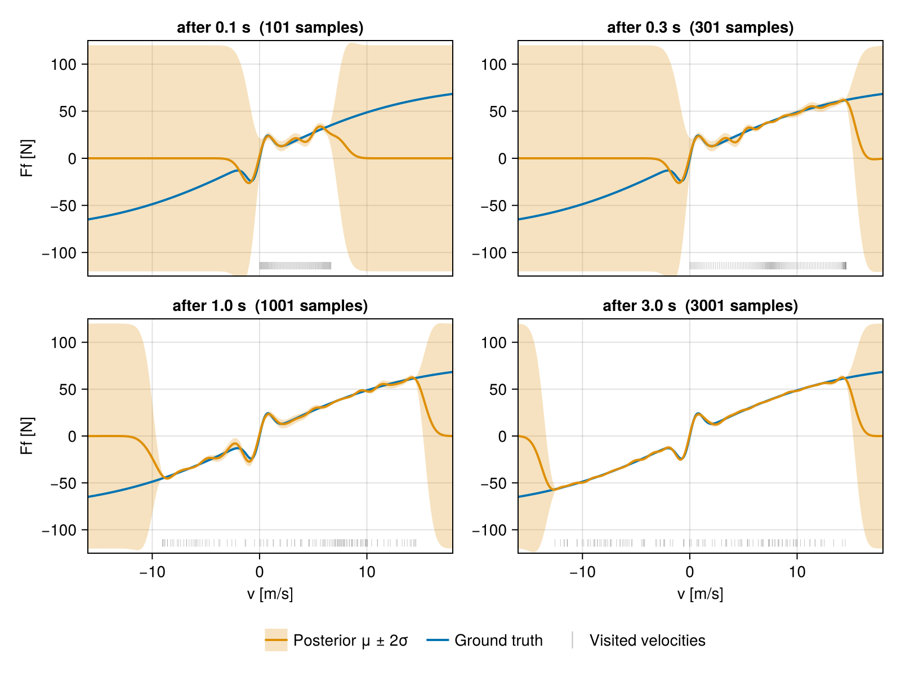
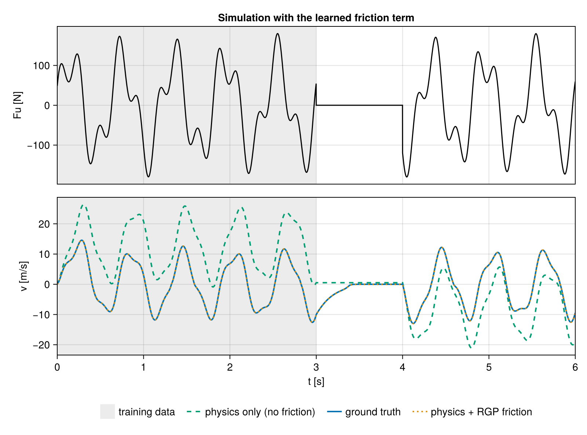

Learning Missing Physics Online
A sliding mass is driven by a known force. Its equation of motion is known except for the friction force, which is a nonlinear function of velocity:
\[m\,\dot v = F_u(t) - F_f(v), \qquad F_f \text{ unknown}\]
An RGP represents $F_f$. Its basis values are appended to the state of an extended Kalman filter, which estimates the velocity and the friction curve in a single pass over the data. The posterior covariance indicates for which velocities the data determines the friction force.
The setup is adapted from the ModelingToolkitNeuralNets friction tutorial, which learns the same friction law with a neural network.
using RecursiveGPs
using AbstractGPs
using SeeToDee
using StaticArrays
using ComponentArrays
using LinearAlgebra
using LowLevelParticleFilters
using Statistics
using Random
using CairoMakieThe system
The friction law to be recovered is a Stribeck curve: a break-away peak near $v = \pm v_{st}$ on a Coulomb tanh saturation, odd in $v$. It generates the data and is not available to the filter.
"""
stribeck(; Fbrk, vbrk, Fc)
Stribeck friction law. Returns a callable `f(v)`.
"""
function stribeck(; Fbrk = 100.0, vbrk = 10.0, Fc = 80.0)
vst, vcol = vbrk / 10, vbrk * sqrt(2)
return v -> sqrt(2 * ℯ) * (Fbrk - Fc) * exp(-(v / vst)^2) * (v / vst) + Fc * tanh(v / vcol)
end
params = (;
mass = 1.0,
dt = 1.0e-3, # 1 kHz
friction = stribeck(),
σ_v = 0.05, # velocity-sensor noise
)
colors = (; truth = "#0173B2", rgp = "#DE8F05", nofric = "#029E73")
rms(a, b) = sqrt(mean(abs2, a .- b))rms (generic function with 1 method)The plant, integrated with a zero-order hold on $F_u$:
function simulate(Fu, tend, p; fric = p.friction, supersample = 10, x0 = SA[0.0, 0.0])
f(x, u, _p, t) = SA[x[2], (u[1] - fric(x[2])) / p.mass]
step = SeeToDee.Rk4(f, p.dt; supersample)
ts = collect(0:p.dt:tend)
xs = Vector{SVector{2, Float64}}(undef, length(ts))
xs[1] = x0
for i in 2:length(ts)
xs[i] = step(xs[i - 1], SA[Fu(ts[i - 1])], nothing, ts[i - 1])
end
return ts, first.(xs), last.(xs)
endsimulate (generic function with 1 method)Experiment
The experiment lasts 6 s. The filter learns from the first 3 s, and the rest is held out to test the learned model.
The applied force is a multisine, so the velocity changes sign repeatedly. Friction is odd in $v$, so a one-directional experiment constrains only half the curve. Between 3 s and 4 s the force is zero. Friction is then the only force on the mass, which coasts to rest with deceleration $F_f(v)/m$.
Fu(t) = 3 <= t < 4 ? 0.0 : 120.0 * sinpi(2t / 0.6) + 60.0 * sinpi(2t / 0.23 + 0.3)
ts, ss, vs = simulate(Fu, 6.0, params)
Random.seed!(1)
ys = [SA[v + params.σ_v * randn()] for v in vs]
us = [SA[Fu(t)] for t in ts]
t_train = 3.0
train = ts .<= t_train;The RGP
Basis points span the velocities we expect to visit. The length scale is the width of the narrowest feature we want to resolve, here the break-away peak at about 1 m/s.
kernel = 60.0^2 * with_lengthscale(SEKernel(), 1.0)
b0 = collect(range(-14.0, 16.0, length = 61))
rgp = RGP(kernel, b0, 1.0e-2)RGP{Vector{Float64}, FillArrays.Zeros{Float64, 1, Tuple{Base.OneTo{Int64}}}, Matrix{Float64}, Matrix{Float64}, @NamedTuple{k::PreallocationTools.DiffCache{Vector{Float64}, Vector{Float64}}, k⁻::PreallocationTools.DiffCache{Vector{Float64}, Vector{Float64}}, H::PreallocationTools.DiffCache{LinearAlgebra.Adjoint{Float64, Vector{Float64}}, Vector{Float64}}, Δg::PreallocationTools.DiffCache{Vector{Float64}, Vector{Float64}}}}(AbstractGPs.GP{AbstractGPs.ZeroMean{Float64}, KernelFunctions.ScaledKernel{KernelFunctions.TransformedKernel{KernelFunctions.SqExponentialKernel{Distances.Euclidean}, KernelFunctions.ScaleTransform{Float64}}, Float64}}(AbstractGPs.ZeroMean{Float64}(), Squared Exponential Kernel (metric = Distances.Euclidean(0.0))
- Scale Transform (s = 1.0)
- σ² = 3600.0), [-14.0, -13.5, -13.0, -12.5, -12.0, -11.5, -11.0, -10.5, -10.0, -9.5 … 11.5, 12.0, 12.5, 13.0, 13.5, 14.0, 14.5, 15.0, 15.5, 16.0], Zeros(61), [3600.01 3176.9888493045437 … 3.8363309241875534e-186 1.3297979046554122e-192; 3176.9888493045437 3600.01 … 8.619317139415521e-180 3.8363309241875534e-186; … ; 3.8363309241875534e-186 8.619317139415521e-180 … 3600.01 3176.9888493045437; 1.3297979046554122e-192 3.8363309241875534e-186 … 3176.9888493045437 3600.01], [0.026032831150656674 -0.09332277239763062 … 1.098037312394905e-8 -2.2392820590181737e-9; -0.09332277239763345 0.36057730683899164 … -5.308237299121018e-8 1.0980373125355992e-8; … ; 1.0980373125270799e-8 -5.3082372990330346e-8 … 0.3605773068378817 -0.09332277239738657; -2.239282059306729e-9 1.0980373125228267e-8 … -0.09332277239739843 0.026032831150605215], [0.0 0.0 … 0.0 0.0; 0.0 0.0 … 0.0 0.0; … ; 0.0 0.0 … 0.0 0.0; 0.0 0.0 … 0.0 0.0], (k = PreallocationTools.DiffCache{Vector{Float64}, Vector{Float64}}([1.95304e-319, 1.66e-321, 1.95304e-319, 1.66e-321, 1.95304e-319, 1.66e-321, 1.95304e-319, 1.66e-321, 1.95304e-319, 1.66e-321 … 1.66e-321, 1.95304e-319, 1.66e-321, 1.95304e-319, 1.66e-321, 1.95304e-319, 1.66e-321, 1.95304e-319, 1.66e-321, 1.95304e-319], [0.0, 0.0, 0.0, 0.0, 0.0, 0.0, 0.0, 0.0, 0.0, 0.0 … 0.0, 0.0, 0.0, 0.0, 0.0, 0.0, 0.0, 0.0, 0.0, 0.0], Dict{DataType, Any}(), true), k⁻ = PreallocationTools.DiffCache{Vector{Float64}, Vector{Float64}}([1.95304e-319, 1.66e-321, 1.95304e-319, 1.66e-321, 1.95304e-319, 1.66e-321, 1.95304e-319, 1.66e-321, 1.95304e-319, 1.66e-321 … 1.66e-321, 1.95304e-319, 1.66e-321, 1.95304e-319, 1.66e-321, 1.95304e-319, 1.66e-321, 1.95304e-319, 1.66e-321, 1.95304e-319], [0.0, 0.0, 0.0, 0.0, 0.0, 0.0, 0.0, 0.0, 0.0, 0.0 … 0.0, 0.0, 0.0, 0.0, 0.0, 0.0, 0.0, 0.0, 0.0, 0.0], Dict{DataType, Any}(), true), H = PreallocationTools.DiffCache{LinearAlgebra.Adjoint{Float64, Vector{Float64}}, Vector{Float64}}(adjoint([1.95304e-319, 1.66e-321, 1.95304e-319, 1.66e-321, 1.95304e-319, 1.66e-321, 1.95304e-319, 1.66e-321, 1.95304e-319, 1.66e-321 … 1.66e-321, 1.95304e-319, 1.66e-321, 1.95304e-319, 1.66e-321, 1.95304e-319, 1.66e-321, 1.95304e-319, 1.66e-321, 1.95304e-319]), [0.0, 0.0, 0.0, 0.0, 0.0, 0.0, 0.0, 0.0, 0.0, 0.0 … 0.0, 0.0, 0.0, 0.0, 0.0, 0.0, 0.0, 0.0, 0.0, 0.0], Dict{DataType, Any}(), true), Δg = PreallocationTools.DiffCache{Vector{Float64}, Vector{Float64}}([1.95304e-319, 1.66e-321, 1.95304e-319, 1.66e-321, 1.95304e-319, 1.66e-321, 1.95304e-319, 1.66e-321, 1.95304e-319, 1.66e-321 … 1.66e-321, 1.95304e-319, 1.66e-321, 1.95304e-319, 1.66e-321, 1.95304e-319, 1.66e-321, 1.95304e-319, 1.66e-321, 1.95304e-319], [0.0, 0.0, 0.0, 0.0, 0.0, 0.0, 0.0, 0.0, 0.0, 0.0 … 0.0, 0.0, 0.0, 0.0, 0.0, 0.0, 0.0, 0.0, 0.0, 0.0], Dict{DataType, Any}(), true)))Coupling the RGP to the physics model
The filter state concatenates the physical state with the GP basis values, $x = [v;\, g]$. st is a plain named tuple: the multi-component constructor only needs μ0, Σ0 and R1, so any struct with those fields works alongside an RGP.
The dynamics call measurement_gp to evaluate the learned force at the current velocity estimate. R2 is the velocity-sensor noise, and q_v the process noise on the velocity state, which also covers the GP's representation error.
function build_filter(rgp, p; q_v = 1.0e-6, v0 = 0.0, Σv0 = 1.0)
components = (;
st = (; μ0 = [v0], Σ0 = fill(Σv0, 1, 1), R1 = fill(q_v, 1, 1)),
fric = rgp,
)
function continuous(x, u, q, t)
xc = ComponentVector(x, q.xid)
Ff = measurement_gp(q.fric, xc.fric, xc.st[1])[1]
return vcat((u[1] - Ff) / q.mass, zero(xc.fric)) # the GP block is stationary
end
dynamics = SeeToDee.Rk4(continuous, p.dt)
measurement(x, u, q, t) = SA[ComponentVector(x, q.xid).st[1]]
R2(x, u, q, t) = @SMatrix [q.σ_v^2]
return ExtendedKalmanFilter(components, dynamics, measurement, R2; p, nu = 1, ny = 1)
end
kf = build_filter(rgp, params)ExtendedKalmanFilter{false, false, LowLevelParticleFilters.KalmanFilter{Matrix{Float64}, Matrix{Float64}, Matrix{Float64}, Matrix{Float64}, ComponentArrays.ComponentMatrix{Float64, Matrix{Float64}, Tuple{ComponentArrays.Axis{(st = ViewAxis(1:1, Shaped1DAxis((1,))), fric = ViewAxis(2:62, Shaped1DAxis((61,))))}, ComponentArrays.Axis{(st = ViewAxis(1:1, Shaped1DAxis((1,))), fric = ViewAxis(2:62, Shaped1DAxis((61,))))}}}, Main.var"#R2#16", LowLevelParticleFilters.SimpleMvNormal{ComponentArrays.ComponentVector{Float64, Vector{Float64}, Tuple{ComponentArrays.Axis{(st = ViewAxis(1:1, Shaped1DAxis((1,))), fric = ViewAxis(2:62, Shaped1DAxis((61,))))}}}, ComponentArrays.ComponentMatrix{Float64, Matrix{Float64}, Tuple{ComponentArrays.Axis{(st = ViewAxis(1:1, Shaped1DAxis((1,))), fric = ViewAxis(2:62, Shaped1DAxis((61,))))}, ComponentArrays.Axis{(st = ViewAxis(1:1, Shaped1DAxis((1,))), fric = ViewAxis(2:62, Shaped1DAxis((61,))))}}}}, Vector{Float64}, Matrix{Float64}, Float64, @NamedTuple{xid::Tuple{ComponentArrays.Axis{(st = ViewAxis(1:1, Shaped1DAxis((1,))), fric = ViewAxis(2:62, Shaped1DAxis((61,))))}}, Σid::Tuple{ComponentArrays.Axis{(st = ViewAxis(1:1, Shaped1DAxis((1,))), fric = ViewAxis(2:62, Shaped1DAxis((61,))))}, ComponentArrays.Axis{(st = ViewAxis(1:1, Shaped1DAxis((1,))), fric = ViewAxis(2:62, Shaped1DAxis((61,))))}}, st::@NamedTuple{μ0::Vector{Float64}, Σ0::Matrix{Float64}, R1::Matrix{Float64}}, fric::RGP{Vector{Float64}, FillArrays.Zeros{Float64, 1, Tuple{Base.OneTo{Int64}}}, Matrix{Float64}, Matrix{Float64}, @NamedTuple{k::PreallocationTools.DiffCache{Vector{Float64}, Vector{Float64}}, k⁻::PreallocationTools.DiffCache{Vector{Float64}, Vector{Float64}}, H::PreallocationTools.DiffCache{LinearAlgebra.Adjoint{Float64, Vector{Float64}}, Vector{Float64}}, Δg::PreallocationTools.DiffCache{Vector{Float64}, Vector{Float64}}}}, mass::Float64, dt::Float64, friction::Main.var"#3#4"{Float64, Float64, Float64, Float64}, σ_v::Float64}, Float64}, SeeToDee.Rk4{Main.var"#continuous#14", Float64}, LowLevelParticleFilters.EKFMeasurementModel{false, Main.var"#measurement#15", Main.var"#R2#16", LowLevelParticleFilters.var"#116#117"{Main.var"#measurement#15"}, Nothing, Nothing}, LowLevelParticleFilters.var"#292#293"{SeeToDee.Rk4{Main.var"#continuous#14", Float64}}}(LowLevelParticleFilters.KalmanFilter{Matrix{Float64}, Matrix{Float64}, Matrix{Float64}, Matrix{Float64}, ComponentArrays.ComponentMatrix{Float64, Matrix{Float64}, Tuple{ComponentArrays.Axis{(st = ViewAxis(1:1, Shaped1DAxis((1,))), fric = ViewAxis(2:62, Shaped1DAxis((61,))))}, ComponentArrays.Axis{(st = ViewAxis(1:1, Shaped1DAxis((1,))), fric = ViewAxis(2:62, Shaped1DAxis((61,))))}}}, Main.var"#R2#16", LowLevelParticleFilters.SimpleMvNormal{ComponentArrays.ComponentVector{Float64, Vector{Float64}, Tuple{ComponentArrays.Axis{(st = ViewAxis(1:1, Shaped1DAxis((1,))), fric = ViewAxis(2:62, Shaped1DAxis((61,))))}}}, ComponentArrays.ComponentMatrix{Float64, Matrix{Float64}, Tuple{ComponentArrays.Axis{(st = ViewAxis(1:1, Shaped1DAxis((1,))), fric = ViewAxis(2:62, Shaped1DAxis((61,))))}, ComponentArrays.Axis{(st = ViewAxis(1:1, Shaped1DAxis((1,))), fric = ViewAxis(2:62, Shaped1DAxis((61,))))}}}}, Vector{Float64}, Matrix{Float64}, Float64, @NamedTuple{xid::Tuple{ComponentArrays.Axis{(st = ViewAxis(1:1, Shaped1DAxis((1,))), fric = ViewAxis(2:62, Shaped1DAxis((61,))))}}, Σid::Tuple{ComponentArrays.Axis{(st = ViewAxis(1:1, Shaped1DAxis((1,))), fric = ViewAxis(2:62, Shaped1DAxis((61,))))}, ComponentArrays.Axis{(st = ViewAxis(1:1, Shaped1DAxis((1,))), fric = ViewAxis(2:62, Shaped1DAxis((61,))))}}, st::@NamedTuple{μ0::Vector{Float64}, Σ0::Matrix{Float64}, R1::Matrix{Float64}}, fric::RGP{Vector{Float64}, FillArrays.Zeros{Float64, 1, Tuple{Base.OneTo{Int64}}}, Matrix{Float64}, Matrix{Float64}, @NamedTuple{k::PreallocationTools.DiffCache{Vector{Float64}, Vector{Float64}}, k⁻::PreallocationTools.DiffCache{Vector{Float64}, Vector{Float64}}, H::PreallocationTools.DiffCache{LinearAlgebra.Adjoint{Float64, Vector{Float64}}, Vector{Float64}}, Δg::PreallocationTools.DiffCache{Vector{Float64}, Vector{Float64}}}}, mass::Float64, dt::Float64, friction::Main.var"#3#4"{Float64, Float64, Float64, Float64}, σ_v::Float64}, Float64}([0.0 0.0 … 0.0 0.0; 0.0 0.0 … 0.0 0.0; … ; 0.0 0.0 … 0.0 0.0; 0.0 0.0 … 0.0 0.0], [0.0; 0.0; … ; 0.0; 0.0;;], [0.0 0.0 … 0.0 0.0], [0.0;;], [1.0e-6 0.0 … 0.0 0.0; 0.0 0.0 … 0.0 0.0; … ; 0.0 0.0 … 0.0 0.0; 0.0 0.0 … 0.0 0.0], Main.var"#R2#16"(), LowLevelParticleFilters.SimpleMvNormal{ComponentArrays.ComponentVector{Float64, Vector{Float64}, Tuple{ComponentArrays.Axis{(st = ViewAxis(1:1, Shaped1DAxis((1,))), fric = ViewAxis(2:62, Shaped1DAxis((61,))))}}}, ComponentArrays.ComponentMatrix{Float64, Matrix{Float64}, Tuple{ComponentArrays.Axis{(st = ViewAxis(1:1, Shaped1DAxis((1,))), fric = ViewAxis(2:62, Shaped1DAxis((61,))))}, ComponentArrays.Axis{(st = ViewAxis(1:1, Shaped1DAxis((1,))), fric = ViewAxis(2:62, Shaped1DAxis((61,))))}}}}((st = [0.0], fric = [0.0, 0.0, 0.0, 0.0, 0.0, 0.0, 0.0, 0.0, 0.0, 0.0 … 0.0, 0.0, 0.0, 0.0, 0.0, 0.0, 0.0, 0.0, 0.0, 0.0]), [1.0 0.0 … 0.0 0.0; 0.0 3600.01 … 3.8363309241875534e-186 1.3297979046554122e-192; … ; 0.0 3.8363309241875534e-186 … 3600.01 3176.9888493045437; 0.0 1.3297979046554122e-192 … 3176.9888493045437 3600.01]), [0.0, 0.0, 0.0, 0.0, 0.0, 0.0, 0.0, 0.0, 0.0, 0.0 … 0.0, 0.0, 0.0, 0.0, 0.0, 0.0, 0.0, 0.0, 0.0, 0.0], [1.0 0.0 … 0.0 0.0; 0.0 3600.01 … 3.8363309241875534e-186 1.3297979046554122e-192; … ; 0.0 3.8363309241875534e-186 … 3600.01 3176.9888493045437; 0.0 1.3297979046554122e-192 … 3176.9888493045437 3600.01], 0, 1.0, (xid = (Axis(st = ViewAxis(1:1, Shaped1DAxis((1,))), fric = ViewAxis(2:62, Shaped1DAxis((61,)))),), Σid = (Axis(st = ViewAxis(1:1, Shaped1DAxis((1,))), fric = ViewAxis(2:62, Shaped1DAxis((61,)))), Axis(st = ViewAxis(1:1, Shaped1DAxis((1,))), fric = ViewAxis(2:62, Shaped1DAxis((61,))))), st = (μ0 = [0.0], Σ0 = [1.0;;], R1 = [1.0e-6;;]), fric = RGP{Vector{Float64}, FillArrays.Zeros{Float64, 1, Tuple{Base.OneTo{Int64}}}, Matrix{Float64}, Matrix{Float64}, @NamedTuple{k::PreallocationTools.DiffCache{Vector{Float64}, Vector{Float64}}, k⁻::PreallocationTools.DiffCache{Vector{Float64}, Vector{Float64}}, H::PreallocationTools.DiffCache{LinearAlgebra.Adjoint{Float64, Vector{Float64}}, Vector{Float64}}, Δg::PreallocationTools.DiffCache{Vector{Float64}, Vector{Float64}}}}(AbstractGPs.GP{AbstractGPs.ZeroMean{Float64}, KernelFunctions.ScaledKernel{KernelFunctions.TransformedKernel{KernelFunctions.SqExponentialKernel{Distances.Euclidean}, KernelFunctions.ScaleTransform{Float64}}, Float64}}(AbstractGPs.ZeroMean{Float64}(), Squared Exponential Kernel (metric = Distances.Euclidean(0.0))
- Scale Transform (s = 1.0)
- σ² = 3600.0), [-14.0, -13.5, -13.0, -12.5, -12.0, -11.5, -11.0, -10.5, -10.0, -9.5 … 11.5, 12.0, 12.5, 13.0, 13.5, 14.0, 14.5, 15.0, 15.5, 16.0], Zeros(61), [3600.01 3176.9888493045437 … 3.8363309241875534e-186 1.3297979046554122e-192; 3176.9888493045437 3600.01 … 8.619317139415521e-180 3.8363309241875534e-186; … ; 3.8363309241875534e-186 8.619317139415521e-180 … 3600.01 3176.9888493045437; 1.3297979046554122e-192 3.8363309241875534e-186 … 3176.9888493045437 3600.01], [0.026032831150656674 -0.09332277239763062 … 1.098037312394905e-8 -2.2392820590181737e-9; -0.09332277239763345 0.36057730683899164 … -5.308237299121018e-8 1.0980373125355992e-8; … ; 1.0980373125270799e-8 -5.3082372990330346e-8 … 0.3605773068378817 -0.09332277239738657; -2.239282059306729e-9 1.0980373125228267e-8 … -0.09332277239739843 0.026032831150605215], [0.0 0.0 … 0.0 0.0; 0.0 0.0 … 0.0 0.0; … ; 0.0 0.0 … 0.0 0.0; 0.0 0.0 … 0.0 0.0], (k = PreallocationTools.DiffCache{Vector{Float64}, Vector{Float64}}([1.95304e-319, 1.66e-321, 1.95304e-319, 1.66e-321, 1.95304e-319, 1.66e-321, 1.95304e-319, 1.66e-321, 1.95304e-319, 1.66e-321 … 1.66e-321, 1.95304e-319, 1.66e-321, 1.95304e-319, 1.66e-321, 1.95304e-319, 1.66e-321, 1.95304e-319, 1.66e-321, 1.95304e-319], [0.0, 0.0, 0.0, 0.0, 0.0, 0.0, 0.0, 0.0, 0.0, 0.0 … 0.0, 0.0, 0.0, 0.0, 0.0, 0.0, 0.0, 0.0, 0.0, 0.0], Dict{DataType, Any}(), true), k⁻ = PreallocationTools.DiffCache{Vector{Float64}, Vector{Float64}}([1.95304e-319, 1.66e-321, 1.95304e-319, 1.66e-321, 1.95304e-319, 1.66e-321, 1.95304e-319, 1.66e-321, 1.95304e-319, 1.66e-321 … 1.66e-321, 1.95304e-319, 1.66e-321, 1.95304e-319, 1.66e-321, 1.95304e-319, 1.66e-321, 1.95304e-319, 1.66e-321, 1.95304e-319], [0.0, 0.0, 0.0, 0.0, 0.0, 0.0, 0.0, 0.0, 0.0, 0.0 … 0.0, 0.0, 0.0, 0.0, 0.0, 0.0, 0.0, 0.0, 0.0, 0.0], Dict{DataType, Any}(), true), H = PreallocationTools.DiffCache{LinearAlgebra.Adjoint{Float64, Vector{Float64}}, Vector{Float64}}(adjoint([1.95304e-319, 1.66e-321, 1.95304e-319, 1.66e-321, 1.95304e-319, 1.66e-321, 1.95304e-319, 1.66e-321, 1.95304e-319, 1.66e-321 … 1.66e-321, 1.95304e-319, 1.66e-321, 1.95304e-319, 1.66e-321, 1.95304e-319, 1.66e-321, 1.95304e-319, 1.66e-321, 1.95304e-319]), [0.0, 0.0, 0.0, 0.0, 0.0, 0.0, 0.0, 0.0, 0.0, 0.0 … 0.0, 0.0, 0.0, 0.0, 0.0, 0.0, 0.0, 0.0, 0.0, 0.0], Dict{DataType, Any}(), true), Δg = PreallocationTools.DiffCache{Vector{Float64}, Vector{Float64}}([1.95304e-319, 1.66e-321, 1.95304e-319, 1.66e-321, 1.95304e-319, 1.66e-321, 1.95304e-319, 1.66e-321, 1.95304e-319, 1.66e-321 … 1.66e-321, 1.95304e-319, 1.66e-321, 1.95304e-319, 1.66e-321, 1.95304e-319, 1.66e-321, 1.95304e-319, 1.66e-321, 1.95304e-319], [0.0, 0.0, 0.0, 0.0, 0.0, 0.0, 0.0, 0.0, 0.0, 0.0 … 0.0, 0.0, 0.0, 0.0, 0.0, 0.0, 0.0, 0.0, 0.0, 0.0], Dict{DataType, Any}(), true))), mass = 1.0, dt = 0.001, friction = Main.var"#3#4"{Float64, Float64, Float64, Float64}(100.0, 80.0, 14.142135623730951, 1.0), σ_v = 0.05), 1.0, 62, 1, 1, LowLevelParticleFilters.SignalNames(["x1", "x2", "x3", "x4", "x5", "x6", "x7", "x8", "x9", "x10" … "x53", "x54", "x55", "x56", "x57", "x58", "x59", "x60", "x61", "x62"], ["u1"], ["y1"], "KF")), SeeToDee.Rk4{Main.var"#continuous#14", Float64}(Main.var"#continuous#14"(), 0.001, 1), LowLevelParticleFilters.EKFMeasurementModel{false, Main.var"#measurement#15", Main.var"#R2#16", LowLevelParticleFilters.var"#116#117"{Main.var"#measurement#15"}, Nothing, Nothing}(Main.var"#measurement#15"(), Main.var"#R2#16"(), 1, LowLevelParticleFilters.var"#116#117"{Main.var"#measurement#15"}(Main.var"#measurement#15"()), nothing, nothing), LowLevelParticleFilters.var"#292#293"{SeeToDee.Rk4{Main.var"#continuous#14", Float64}}(SeeToDee.Rk4{Main.var"#continuous#14", Float64}(Main.var"#continuous#14"(), 0.001, 1)), LowLevelParticleFilters.SignalNames(["x1", "x2", "x3", "x4", "x5", "x6", "x7", "x8", "x9", "x10" … "x53", "x54", "x55", "x56", "x57", "x58", "x59", "x60", "x61", "x62"], ["u1"], ["y1"], "EKF"))Training
A single pass over the training data. Each kf(u, y) runs one predict-correct cycle. The posterior is stored at four times for the plot below.
snap_times = [0.1, 0.3, 1.0, t_train]
snap_steps = round.(Int, snap_times ./ params.dt) .+ 1 # sample index of each snapshot
snaps = Dict{Int, Any}()
@time for (i, (u, y)) in enumerate(zip(us[train], ys[train]))
kf(u, y)
i in snap_steps && (snaps[i] = (copy(state(kf)), copy(covariance(kf))))
end 4.970981 seconds (7.68 M allocations: 2.829 GiB, 10.59% gc time, 56.94% compilation time)Posterior during training
The grey rug marks the velocities visited so far. Within this range the posterior mean follows the true curve with a narrow band. Outside it, the posterior remains at the prior.
After 0.3 s the positive velocity range has been covered and the fit there is accurate. Negative velocities have not been visited yet and remain at the prior.
vplot = collect(range(-16.0, 18.0, length = 300))
seen = [vs[1:n] for n in snap_steps]
fig1 = Figure(size = (800, 600))
axs = [CairoMakie.Axis(fig1[cld(i, 2), mod1(i, 2)];
title = "after $(snap_times[i]) s ($(snap_steps[i]) samples)")
for i in eachindex(snap_times)]
for (ax, n, visited) in zip(axs, snap_steps, seen)
p = predict_gp(kf, vplot, snaps[n]..., :fric)
σ = sqrt.(abs.(diag(p.Σ)))
rug = visited[1:max(1, length(visited) ÷ 120):end]
band!(ax, vplot, p.μ .- 2σ, p.μ .+ 2σ; color = (colors.rgp, 0.25), label = "Posterior μ ± 2σ")
lines!(ax, vplot, params.friction.(vplot); color = colors.truth, linewidth = 2, label = "Ground truth")
lines!(ax, vplot, p.μ; color = colors.rgp, linewidth = 2, label = "Posterior μ ± 2σ")
scatter!(ax, rug, fill(-114.0, length(rug)); marker = '|', markersize = 7, color = (:gray, 0.45), label = "Visited velocities" => (; markersize = 16))
end
xlims!.(axs, Ref(extrema(vplot)))
ylims!.(axs, -125, 125)
axs[3].xlabel = axs[4].xlabel = "v [m/s]"
axs[1].ylabel = axs[3].ylabel = "Ff [N]"
hidexdecorations!.(axs[1:2]; grid = false)
Legend(fig1[3, 1:2], axs[1]; orientation = :horizontal, framevisible = false, merge = true)
fig1
Accuracy
Measured over the velocity range the training data covered. coverage_2σ is the fraction of the curve inside the ±2σ band, which should be $\approx 0.95$ if the posterior is well calibrated.
lo, hi = extrema(vs[train])
vtest = collect(range(lo, hi, length = 200))
post = predict_gp(kf, vtest, :fric)
σtest = sqrt.(abs.(diag(post.Σ)))
err = post.μ .- params.friction.(vtest)
@info "Learned friction" covered_range = (lo, hi) rmse = rms(post.μ, params.friction.(vtest)) coverage_2σ = mean(abs.(err) .<= 2 .* σtest) friction_scale = maximum(abs, params.friction.(vtest))┌ Info: Learned friction
│ covered_range = (-12.591471894318229, 14.567312500352024)
│ rmse = 0.7793454845813478
│ coverage_2σ = 0.99
└ friction_scale = 61.914738037349544Re-simulation with the learned term
The posterior mean is inserted into the equation of motion, and the full 6 s are simulated from the applied force. The model without friction serves as a baseline. The error is evaluated on the held-out interval $t > 3$ s.
ĝ = state(kf, :fric)
f̂(v) = measurement_gp(rgp, ĝ, v)[1]
_, _, v_hybrid = simulate(Fu, 6.0, params; fric = f̂)
_, _, v_nofric = simulate(Fu, 6.0, params; fric = v -> zero(v))
test = .!train
@info "Simulation on held-out data" hybrid_rmse = rms(v_hybrid[test], vs[test]) no_friction_rmse = rms(v_nofric[test], vs[test])┌ Info: Simulation on held-out data
│ hybrid_rmse = 0.027512047082295016
└ no_friction_rmse = 6.6378081774218725fig2 =Figure(size = (800, 600))
axs = [CairoMakie.Axis(fig2[i, 1]; height = 215) for i in 1:2]
vspan!.(axs, 0.0, t_train; color = (:gray, 0.15), label = "training data")
lines!(axs[1], ts, first.(us); color = :black, linewidth = 1.5)
lines!(axs[2], ts, v_nofric; color = colors.nofric, linewidth = 2, linestyle = :dash, label = "physics only (no friction)")
lines!(axs[2], ts, vs; color = colors.truth, linewidth = 2, label = "ground truth")
lines!(axs[2], ts, v_hybrid; color = colors.rgp, linewidth = 2, linestyle = :dot, label = "physics + RGP friction")
axs[1].title = "Simulation with the learned friction term"
axs[1].ylabel = "Fu [N]"
axs[2].ylabel = "v [m/s]"
axs[2].xlabel = "t [s]"
xlims!.(axs, Ref(extrema(ts)))
linkxaxes!(axs...)
hidexdecorations!(axs[1]; grid = false)
Legend(fig2[3, 1], axs[2]; orientation = :horizontal, framevisible = false)
resize_to_layout!(fig2)
fig2
The shaded interval marks the training data. Beyond it, the completed model predicts the coast-down during the pause and the response after the force resumes. The model without friction retains its velocity at 3 s.
The learned term is valid only within the velocity range visited by the experiment. Outside this range the posterior reverts to the prior.
This page was generated using Literate.jl.